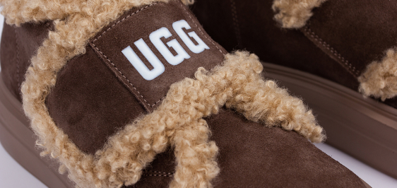

<section class="info__section" id="charact">
    <div class="container">
        <div class="info__section-wrapper">
            <p class="tag">Характеристики<sup>[03]</sup></p>
            <div class="info__section-top">
                <h2 class="info__section-title">
                    *Важливі <br> деталі
                </h2>
                <h3 class="info__title-decor">
                    UGG Women’s <br> Sity Trainer
                </h3>
            </div>
            <div class="info__block">
                <div class="info__block-left">
                    <div class="info__item info__item-1"></div>
                    <div class="info__item info__item-2"></div>
                    <div class="info__item info__item-3">
                        <h4 class="info__item-title">
                            хутро
                        </h4>
                        <p class="info__item-text">
                            що зберігає тепло і забезпечує комфорт
                        </p>
                    </div>
                    <div class="info__item info__item-4"></div>
                    <div class="info__item info__item-5">
                        <h4 class="info__item-title">
                            замша
                        </h4>
                        <p class="info__item-text">
                            Натуральна замша – міцна, дихаюча, додає взуттю елегантного вигляду.
                        </p>
                    </div>
                    <div class="info__item info__item-6"></div>
                </div>
                <div class="info__block-right">
                    
                    <div class="info__block-wrapper">
                        <h4 class="info__item-title">
                            Поліуретан
                        </h4>
                        <p class="info__item-text">
                            з антиковзкими властивостями – легкий, гнучкий та стійкий. <br>
                            Призначення - зимовий сезон, забезпечення тепла та зручності в міських умовах.
                        </p>
                        <a href="#card" class="order__btn">
                            <span>Купити зараз</span>
                        </a>
                    </div>
                </div>
            </div>
        </div>
    </div>
</section>